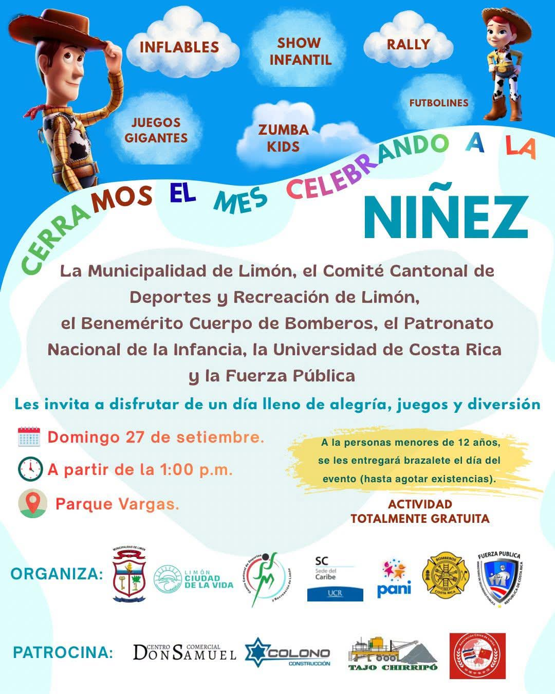

🎉 ¡Celebramos a los niños y las niñas! La Municipalidad de Limón, el Comité Cantonal de Deporte y Recreación de Limón, el Benemérito Cuerpo de Bomberos, el Patronato Nacional de la Infancia, la Universidad de Costa Rica y la Fuerza Pública, les invita a disfrutar de un día lleno de alegría, juegos, diversión y muchas sorpresas 🥳
Actividad comunal